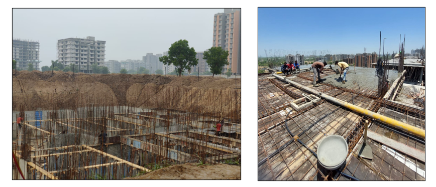
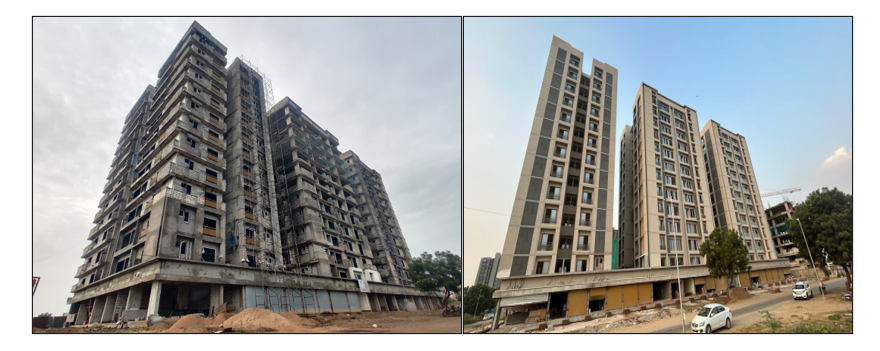
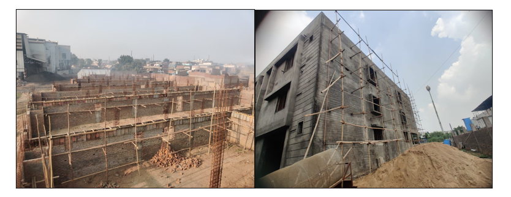
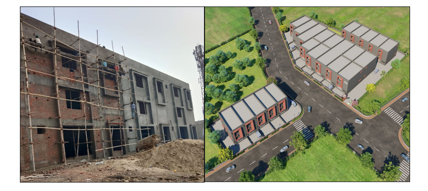
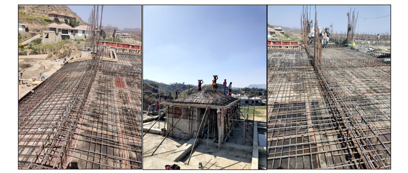
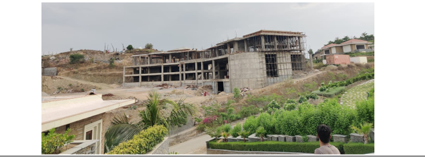

Civil Engineer · Project Manager · Construction Delivery
Delivering industrial, residential & infrastructure projects with precision.
Results-driven Civil Engineer with 8+ years of experience delivering projects up to $120M. Skilled in planning, scheduling (Primavera P6), cost control, estimating (RSMeans, Bluebeam), and project management (Procore). Pursuing LEED GA and PMP.
About Me
Civil engineer with 8+ years spanning project engineering, project management, field execution, construction estimating, BIM coordination, and transportation infrastructure analysis — across high-rise residential buildings, large industrial sheds, resort construction on challenging terrain, and traffic engineering for public infrastructure clients.
Fluent in Procore, Primavera P6, Bluebeam Revu, AutoCAD, Revit, RSMeans, and Navisworks. Holds a Master of Engineering in Civil Engineering from the University of Texas at Arlington (GPA 3.7) and is actively pursuing LEED GA and PMP certifications.
Technical Skills
Project Management
Procore, Primavera P6, BIM Coordination, Bluebeam Revu, On-Screen Takeoff
Design & Drafting
AutoCAD 2D/3D, Revit (MEP & Architecture), Navisworks, Synchro, MicroStation
Estimating & Scheduling
RSMeans, Quantity Takeoff, Cost Estimating, WBS, Primavera P6, Level 3 Bid Schedule
Engineering & Analysis
Risa 2D, Highway Capacity Software (HCS), Synchro Traffic, MS Office Suite
Field Operations
RFIs, Submittals, Change Orders, OSHA 30 Safety, Scaffolding Systems, Progress Reports
Soft Skills
Critical Thinking, Multi-tasking, Problem Solving, Stakeholder Communication, Attention to Detail
Professional Experience
Project Engineer — DeShazo Group Inc.
- Performed Traffic Impact Analyses (TIAs), Traffic Management Plans (TMPs), and signal warrant studies.
- Conducted level of service (LOS) evaluations and traffic simulations using Synchro and HCS.
- Prepared site circulation plans, CAD exhibits, and technical reports for planning and permitting.
Graduate Teaching Assistant — UT Arlington
- Assisted in teaching Construction Estimating using RSMeans and Bluebeam.
- Mentored students on contract administration, ethics, and construction financial planning.
Project Manager — Ganesh Builders (Jay Ambe Industrial)
- Directed execution of a 60,000 sq.ft. industrial shed project valued at $70M.
- Oversaw pile foundation, ground beam construction, and multi-level structural execution.
- Used Procore, Primavera P6, and Bluebeam Revu for coordination, scheduling, and drawing reviews.
Project Engineer — Ganesh Builders (Shreeyam Lotus)
- Managed a 12-story high-rise (2 basements + 12 floors), delivered 45 days ahead of schedule.
- Coordinated footing systems, RCC construction, MEP integration, masonry, and plastering activities.
- Improved bid accuracy by 15%; processed RFIs, submittals, and change orders throughout.
Field Engineer — Vipsa Construction (Mementos by ITC Hotels)
- Full-cycle resort construction on hilly terrain including RCC retaining walls, slab and dome works.
- Managed scaffolding systems (Jack lock, Cup lock) and daily site operations.
- Improved reporting efficiency by 30% through structured Excel-based progress logs.
Project Highlights
12-Story Residential & Commercial Development
High-Rise ResidentialSupported full lifecycle from foundation layout and QC inspection to 11th-floor slab pour supervision, masonry coordination, and final project closeout on a high-rise mixed-use development.


Industrial Shed Development — $70M
IndustrialManaged brickwork, beam casting, plastering phase initiation, Phase 1 front elevation completion, and architectural design coordination for a large pile-supported industrial shed.


Resort Project on Hill — Udaipur
Resort ConstructionFull-cycle resort construction on hilly terrain — reinforcement inspection, overhead tank dome casting, 21-ft high-level slab with integrated canopy, cantilever canopy concrete, and overall structural completion.


Bid Package — Palo Duro Comfort State Park
Estimating & SchedulingReviewed bid documents, conducted quantity takeoffs with RSMeans, created a Work Breakdown Structure, and developed a Level 3 Primavera P6 bid schedule. Compiled full bid package for project submission.
Shaft Excavation — Tunnel Project
Excavation PlanningCalculated soil quantities for screening and pumping shafts, determined excavation cycle times, truck requirements, power needs, and compaction requirements for both soil spreading and compaction phases.
Box Girder Bridge Timber Falsework Design
Structural DesignDesigned falsework components — stringers, soffit, cap beam, post, lateral bracing, stem wall, and top deck. Calculated shear force, bending moment diagrams, and cap beam reactions using Risa 2D.
Education
Master of Engineering, Civil Engineering
Risk Management • Construction Finance • BIM • Temporary Structures • Construction Sustainability • Advanced Project Control • Construction Methods & Field Operations
Bachelor of Engineering, Civil Engineering
Diploma in Engineering, Civil Engineering
Certifications
- CMIT — Construction Manager in Training (CMAA)
- OSHA 30-Hour Construction Safety
- Procore — Project Management
- Autodesk Revit (MEP)
- Autodesk Revit (Architecture)
- LEED GA — In Progress
- PMP — In Progress
Contact
Open to opportunities in project engineering, project management, construction management, and infrastructure coordination — nationwide.